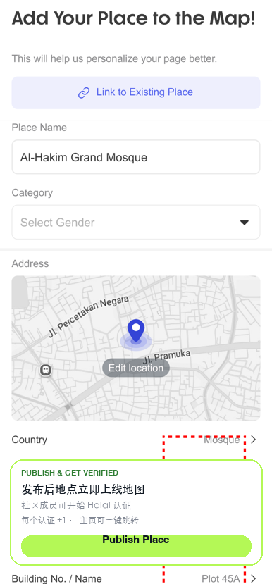
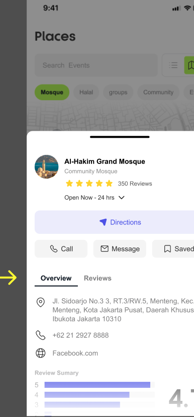
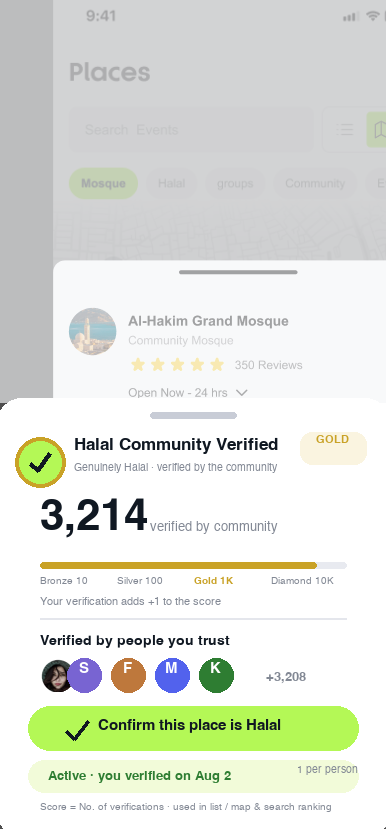

Core mechanism: any user can publish a Place; other users can tap Verified on-site to confirm “this place is genuinely Halal”; every new verification adds +1 to the number shown on the Place — that number is the place's Halal trust score, used directly for list / map / search ranking.
Any user submits a place via the Add Your Place form
Goes live on the map once approved
Enters “awaiting verification” state
Other users tap
“Confirm this place is Halal” on the detail page
One vote per person, +1 in real time
Verification count = score
The number is shown on
place cards / map pins / detail page
Score unlocks tier badges
and search / ranking weight
High-score places gain extra exposure
S1 is built on the real P51 “Add Your Place” form page; S2 / S3 use the real Places detail screenshot you provided — S3 only adds the verification Bottom Sheet (original pixels untouched).



| Module | Rule |
|---|---|
| Scoring | Score = number of Verified confirmations. Tapping “Confirm this place is Halal” adds +1 instantly; withdrawing a verification −1; the number refreshes in sync on the detail-page big counter, list-card badge, and map-pin corner badge |
| Tier Badges | Bronze 10 → Silver 100 → Gold 1K → Diamond 10K. Badge ring upgrades with tier (gold / silver / bronze ring), shown in sync on the detail page and cards |
| One Vote Per Person | Each account may verify a given Place only once; tapping again returns the panel showing “Active · you verified on X date”; changing a verification requires cancel first, then re-verify |
| Anti-Abuse | ① On-site check: the verification entry is surfaced first to users who checked in on Places / are within 500m (weak-signal verification allowed but weighted 0.5); ② merchant-owned accounts cannot verify their own Place; ③ same-device / same-payment-account clustering, abnormal spikes go to manual review; ④ the first 10 votes on a new Place take effect with per-vote delay to prevent brigading |
| Trust Display | The panel shows “Verified by people you trust” — confirmations from mutual friends / same group members rank first; the total (+3,208) drills down into the full verifier list (avatars tap through to profiles) |
| Ranking Benefits | Places of the same category sort by score; searching “halal restaurant” defaults to Verified-first; places scoring ≥ Gold gain weighted exposure in the Discover recommendation feed |
| Analytics | place_published / verify_sheet_open / verify_confirm_tap / verify_cancel_tap / verifier_list_open / score_tier_up |